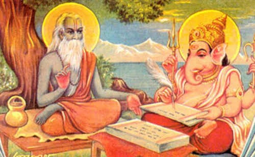
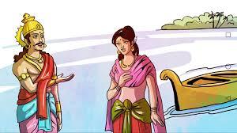
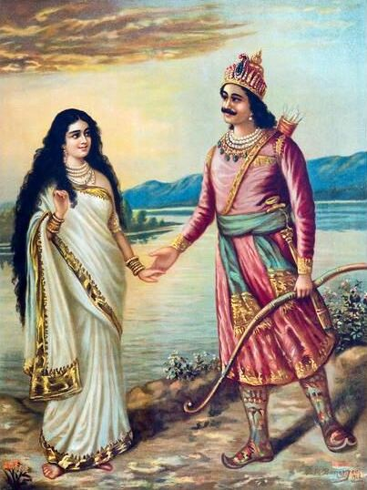
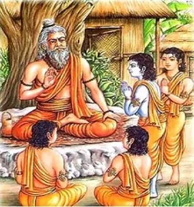
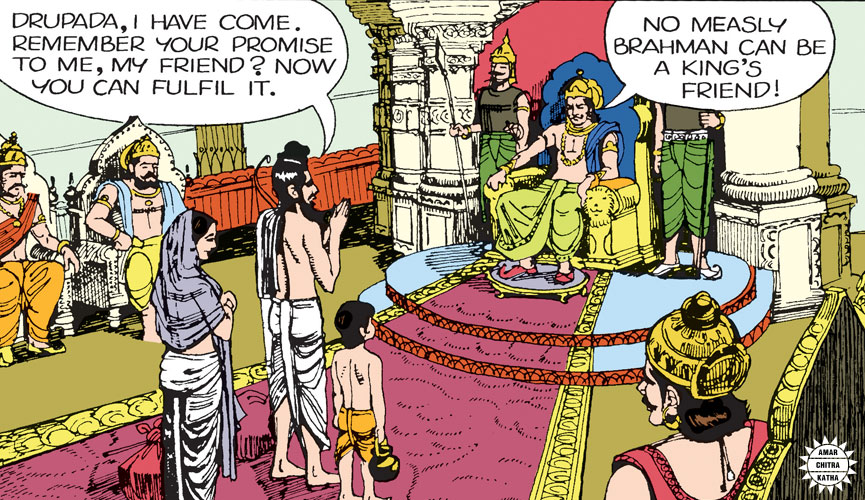

Mahabharata is a literary treasure of India. It is the longest epic poem in the world, originally written in Sanskrit, the ancient language of India. It was composed by Vyasa several thousand years ago.. Mahabharata belongs not only to India but to the world too. It is a parable of the human race and carries a universal message - victory comes to those who stay on the righteous path. It is a real life drama that stands as a perennial spiritual strength to the people of India in all phases of their lives.

The story of Mahabharata starts with King Dushyant, a powerful ruler of ancient India. Dushyanta married Shakuntala, the foster-daughter of sage Kanva. Shakuntala was born to Menaka, a nymph of Indra's court, from sage Vishwamitra, who secretly fell in love with her. Shakuntala gave birth to a worthy son Bharata, who grew up to be fearless and strong. He ruled for many years and was the founder of the Kuru dynasty. Unfortunately, things did not go well after the death of Bharata and his large empire was reduced to a kingdom of medium size with its capital Hastinapur. Mahabharata means the story of the descendents of Bharata. The regular saga of the epic of the Mahabharata, however, starts with king Shantanu. Shantanu lived in Hastinapur and was known for his valor and wisdom. One day he went out hunting to a nearby forest. Reaching the bank of the river Ganges (Ganga), he was startled to see an indescribably charming damsel appearing out of the water and then walking on its surface. Her grace and divine beauty struck Shantanu at the very first sight and he was completely spellbound. When the king inquired who she was, the maiden curtly asked, "Why are you asking me that?" King Shantanu admitted "Having been captivated by your loveliness, I, Shantanu, king of Hastinapur, have decided to marry you." "I can accept your proposal provided that you are ready to abide by my two conditions" argued the maiden. "What are they?" anxiously asked the king. "Firstly, you will never ask anything about my personal life, like who I am or where do I come from? Secondly, you will never stop me from doing anything or ask the reason of anything I do." Shantanu was totally gripped by the maiden's beauty, now known as Ganga, and immediately accepted her conditions. They instantly entered into a love marriage (Gandharva vivah) and returned home. Things went on quite smoothly for sometime and then queen Ganga gave birth to a lovely boy. As soon as king Shantanu heard of this good news, he was overjoyed and rushed to the palace to congratulate the queen. But he was astonished to see that the queen took the newborn into her arms, went to the river, and drowned him. The king was shocked and felt miserable, yet he could not ask the queen about her action. He was bound by his pledge, not to question or interfere with the her actions. Hardly had Shantanu recovered from the shock of the death of his first son at the hands of the queen when she became expectant again. The king felt happy and thought that the queen would not repeat her dreadful action again. But the queen again took the newborn into her arms, and drowned him in the river. After seeing the ghastly action of the queen, the king was in immense grief again, but his pledge barred him to say anything. This continued on until queen Ganga bore the eighth son and marched to the river as before. Shantanu lost his patience and as soon as the queen was about to drown the newborn, Shantanu stopped her. "I have lost seven sons like this and am left with no heir. I can no longer stand to see my flesh and blood decimated before my eyes." Queen Ganga turned around and said, "Oh King, you have violated your pledge. I will not stay with you any longer. However before leaving you, I will open the secret that led to the death of your seven sons. Once it so happened that the saint Vashishtha got offended with eight gods known as Vasus. He cursed them to be born as human beings on the earth and undergo the mental torture of being a human. Hearing this, seven of the Vasus implored the saint to be excused but the eighth one, who was the most mischievous, kept standing rudely. " Vashishtha was appeased and modified his curse, "Seven of you will die and come back to heaven as soon as you are born, but the eighth one will have to live on the earth for a long period and face the tribulations as a human." Ganga continued, "Upon the request from the Vasus, I assume the human form and marry you. My job is now over and I must now go back to my heavenly abode. I am taking your eighth son with me and will bring him back to you after he is amply grown up." After saying this, Ganga flew away into the sky along with the newborn. King Shantanu felt very disappointed and returned to his palace with a broken heart. Many years after, when Shantanu was taking a stroll on the bank of the river Ganges (Ganga), Goddess Ganga emerged out of the river with a young boy. Ganga spoke, " Oh King! Here is your eighth son, Deva Vrata. I have brought him up in order that he may be able to cope with what is to befall on him in his life on this earth." The king happily brought the prince to the palace and celebrated his advent by declaring him the crown prince of his kingdom. Deva Vrata was brave, just and looked highly promising. King Shantanu was getting old and announced his retirement. He was lonely and always missed Ganga. It was one day while he was taking a stroll on the bank of the river Ganges; he was attracted towards a charming maiden, Satyavati. She was the daughter of the chief of the fishermen tribe. She took the sages across the river on her boat. She had a divine aroma coming out of her body. Shantanu did not know the secret that circled around Satyavati during her maiden days. Satyavati once had a bad fishy smell on her body. Sage Parashar, one of the sages who she took across the river, had a special liking for her. He was pleased and blessed her with a sweet aroma along with the boon of a son who was named Vyas.


Immediately after birth, Vyas grew up quickly through his divine powers and left for the forest. Vyas, however, promised his mother Satyavati that he will come back whenever he was called for. Vyas, later known as Veda Vyas, had mastery of the Vedas but was extremely ugly looking and had a horrible smell. Veda Vyas authored the story of the Mahabharata, for the sake of the posterity. It is said that Vyas dictated the entire epic at a stretch while Lord Ganesh acted as the scriber. In addition, Vyas played a central role in his story appearing and disappearing on the scene whenever his mother or her family members sought his help. He had rare magical qualities to resolve their problems. Shantanu, unaware of the secrets of Satyavati's maiden life, was charmed by her beauty. He went to her father, the chief fisherman, and asked him for the hand of his daughter. The chief fisherman, placed the condition that the son born of Satyavati will be the successor of the Kaurava throne and not Deva Vrata. Santanu was shocked to hear the condition and returned home disappointed and unhappy. Deva Vrata later discovered the cause of his father's unhappiness and went to Satyavati's father, to advocate his father’s position on marrying Satyavati. In return he promised to give up his right to the throne for Satyavati's son. The chief fisherman thought for a while and showed his further concern by saying, "What about your children? They may not honor your promise?" Hearing this, Deva Vrata took the terrible vow that he will never marry in his life, for he would remain as a brahamachari. From then on he was known as Bheeshma, the firm. Bheeshma brought Satyavati on his chariot to the palace and presented her to his father. Shantanu felt shocked when he heard of all that happened. He blessed Bheeshma with the power to choose his day of death. In due course of time, queen Satyavati became the mother of two princes - Chitrangad and Vichitravirya. After Shantanu's death, Chitrangad succeeded the throne but was killed in a war. Vichitravirya, was then a minor, and was enthroned by Bheeshma as the king of Hastinapur. When Vichitravirya came of age, Bheeshma and queen Satyavati got him married to two princesses of Kashi, Amba and Ambika. Unfortunately, Vichitravirya died without a successor. Bheeshma and Satyavati conferred and decided to call Veda Vyas. Vyas arrived in no time. Satyavati explained to him the grave situation that the Kaurava family was facing without an heir. He requested Vyas to bless Ambika, the elder of the two widows of Vichitravirya, to bless with a son who can succeed the deceased king. Vyas agreed. When Vyas approached Ambika, she was frightened by his ugly face and shut her eyes while the saint uttered the boon. As a result, the son born to Ambika was blind. He was named Dhritarashtra. The queen was disappointed and asked Vyas to offer the boon to Ambalika, the younger widow. Ambalika could not stand his smell and turned pale out of fear while the saint was uttering the boon. As a result, the child born of Ambalika was pale and was called Pandu, meaning pale. Queen Satyavati was puzzled, what can be done now? Requesting the saint for another chance, she sent for the elder widow Ambika once more to receive the boon from the saint. Ambika was so scared of the saint that she could not dare to go before him. Instead, without telling her mother-in-law, Ambika sent her maid to the saint after disguising her with stately garments. The maid remained fearless and greeted the saint, Veda Vyas, with great devotion. Feeling happy, the saint gave her a boon and she bore a perfect child called Vidur. In course of time Pandu ascended the throne as his elder brother Dhritarashtra was blind and Vidur became the prime minister due to his sagacity and distinguished talent. Dhritarashtra married Gandhari, the princess of Gandhar in Beluchistan, (today's Pakistan). When Gandhari came to know that her husband is blind, she, as a true wife, sharing the emotions of her husband, bandaged her eyes permanently with a cloth. During the time of Pandu, the kingdom of the Kurus expanded far and wide. Pandu was married twice, first to Kunti and then to Madri. After many years of rule, Pandu decided to retire to Himalayas leaving the kingdom in the hands of Dhritarashtra and grandfather Bheeshma. There was no heir to the throne since none of the brothers had any children. Later one day, when Pandu was hunting in the forest, he shot an arrow to a deer who was in the state of making love. Before dying, the deer cursed Pandu that he will die instantly when he will touch any of his wives. Pandu was shocked. After returning to the hermitage, he explained what happened to his wives. They all agreed to lead the life of an ascetic. They were, however, sad that any chance of having their children to succeed the throne of Kaurava dynasty was gone. In Hastinapur, Gandhari called Veda Vyasa and requested him the boon to bear one hundred sons and a daughter. Veda Vyas very kindly agreed but informed Gandhari that it will take some time before they arrive. Gandhari was in no rush since she knew that Pandu could not have any children because of the deer's curse. However, things turned out differently. In the forest, Pandu began to suffer from a deep depression, due to the deer's curse, Kunti painfully noticed it. Kunti was concerned and wanted to reveal a secret that she kept in her heart until then, in order to make Pandu happy. Kunti said, "When I was a young maid, sage Durbasha came to my father's house. I served the sage devotionally and, as a result, the sage blessed me with a mantra through which I could invoke any god I desire to get a son. The mantra, however, can be used only five times." Pandu was very happy. He can now have his sons without even touching Kunti. Kunti, however, did not disclose to Pandu that she has already used the mantra once. This happened when, after receiving the mantra, she became impatient to use it without comprehending the consequences. She called the sun god and was blessed with a son wearing earrings from birth. Now she realized that the child is born out of wedlock. For fear of infamy, she put the newborn into a basket and set it afloat the river Ganga. A charioteer who was childless, luckily discovered the basket. He brought up the abandoned child who was later named Karna because he was born with the earrings. Pandu requested Kunti to call for Dharma, the god of righteousness. Kunti was blessed with Pandu's first son Yudhishthira. The news of the birth of first child reached Dhritarashtra and Gandhari. Gandhari was disturbed that she cannot be the mother of the future king. She immediately called Vyasa and requested him to force the birth of her hundred sons. Through his magical powers Vyasa shortened the waiting period and hundred sons of Dhritarashtra emerged along with a daughter Dushala. Duryodhan was the eldest son while Dushashan was the second. Gandhari was not happy that, in spite of her best efforts, Pandu's first son Yudhishthira would be the true heir to the throne and not her eldest son, Duryodhana. In order to strengthen the Kuru dynasty, Pandu requested Kunti for getting more children. Kunti called the wind god Pavan and Bheema, the second son was born. Indra blessed Kunti with the third son, Arjuna. Madri was still childless. Pandu requested Kunti to pass on the mantra to Madri so that she can have a child. Madri called the twin god, Ashwins and was blessed with two sons, Nakula and Sahadeva. Thus Pandu had five sons, Yudhishthira, Bheema, Arjuna, Nakula and Sahadeva. These five worthy children of Pandu were called Pandavas. They grew up strong and well behaved. They learnt the art of war games from their able father Pandu. The sages taught them the teachings of the Vedas. It was one spring day while Pandu was strolling on the riverside, he saw Madri passing by. Aroused with passion he touched Madri and died instantly. Kunti and Madri were devastated. The news reached Dhritarashtra and he too was shocked. The body of Pandu was carried to Hastinapur for the crematory rites. Madri decided to ascend to the funeral pyre of Pandu and appealed to Kunti to take care of her two sons, Nakula and Sahadeva, like her own three children. The Pandavas, the sons of Pandu, returned to Hastinapur and joined their cousins, Kauravas, the sons of Dhritarashtra. All the cousins, the Pandavas and the Kauravas grew up together under the direction of their grandfather Bheeshma. Kripacharya, an able teacher of martial art, trained them for war games. Kripacharya in his childhood days, known as Kripa, came to King Shantanu, Bheeshma's father, along with his sister Kripi, as orphans from a Brahmin family. Shantanu was a kind hearted person. He raised Kripa and Kripi with best care. Kripa, through his best effort became a master in martial art and was then known as Kripacharya. Kripi was married to Drona, the son of sage Bharadwaj; Sage Bharadwaj was the best archer of his time. He ran a school to teach martial arts to the princes. His father, Bharadwaj, personally trained his son Drona. During his student life, Drona became a close friend of prince Drupada who promised Drona that he would share his kingdom with him when he became king. But when Drupada became king, he forgot all about his childhood promises to Drona. After the death of Bharadwaj, Drone took over his father's responsibilities and was known as Dronacharya. In those days, an ideal teacher provided free education to all of his students and was satisfied with the honor showered by his students and the community. As a result, he stayed poor in meeting his daily needs unless some royalty provided financial support. Drona was no exception. He had a son named Ashwathama whom he loved dearly. One day Dronacharya witnessed that his playmates mocked his son because he was poor. He decided to go to his former schoolmate Drupada for financial help. Drupada, drowned in his royalty, ignored his childhood promises to Drona. He insulted Drona in his open court. Drone took the vow that one day he will get even with Drupada and left the court in rage. He soon left his hermitage and arrived at Kripa's residence along with his wife Kripi and Ashwathama.

Drona was passing by one day, when the princes of Hastinapur were playing ball. He saw the bouncing ball fall into a nearby well. The princes were puzzled as to get the ball out of the well. Then Drona came forward. He listened to the princes and then threw his own ring into the well. Then he boasted that he would get both the ball and the ring with the help of his archery. The princes were amazed to see that he kept his promise. They all requested Drona to see their grandfather Bheeshma. Bheeshma, the old warrior, heard what happened and was amazed by the ability of Drona. He immediately appointed Drona as the teacher of archery for the princes. Drona was very pleased with his position that considerably improved the economic condition of his family. He began to instruct the princes with great care and love. He was confident that his royal disciples will one day help him to defeat Drupada, and he will be able to fulfill his vow of getting even with him. Of all the disciples, Drona loved Arjuna the most. He was most skillful and Drona promised Arjuna that he would make him the best archer in the world. One-day prince Ekalavya, son of king Nishad, came to Drona and requested Drona to take him as his disciple. King Nishad belonged to a low cast and Drona was committed only to the royal princes of Kuru dynasty. Thus, Drona refused to take Ekalavya as his disciple. Ekalavya was disappointed but did not lose hope. He went into a deep forest, made an idol of Drona and considering him as his guru, practiced archery daily. Through his devotion and constant practice, Ekalavya excelled in the game of archery. One day the Kuru princes went hunting into the jungle where Ekalavya lived. Their hunting dog strayed from the party and saw Ekalavya. It began to bark while Ekalavya was busy with his practice of archery. Ekalavya shot a volley of arrows at the dog such that it corked its open mouth. The dog ran back to the royal party and the princes were amazed to see its plight. They all came to Ekalavya, along with Drona, in order to identify the person who has surpassed them in the art of archery. Seeing Drona Ekalavya fell at the feet of his guru. Drona was highly pleased by his devotion and diligence. He soon recognized that Ekalavya will eventually become the indomitable rival of Arjuna and Drona may not be able to keep his promise. So, Drona asked for his right thumb as teacher's reward (guru dakshina) and Ekalavya obeyed, cutting his right thumb and placing it at the guru's feet. What a glorious example of obedience to teachers! When the princes had completed their training, grandsire Bheeshma arranged for a competition in order to demonstrate their sportsmanship. Various dignitaries were invited in the grand ceremony. Arjuna surprised everyone by his feats of archery. When the tournament was about to complete, Karna arrived on the scene. No one knew that he was the illegitimate child of Kunti raised by a charioteer. He challenged Arjuna. At this point, Kripacharya objected. "The competition is meant for royal princes only and is not open to ordinary people." Hearing the objection, Duryodhan, a rival of Arjuna, came forward and offered Karna the state of Anga, making him a prince. Karna was as good as Arjuna and no one could decide the superiority of one over the other. The day completed and the royal princes, came to Drona to pay respect and pay guru dakshina (teacher's reward). Drona asked them to capture Drupada, the king of Panchal, and bring him to Drona as a prisoner. Kauravas and Pandavas had no problem to run over Panchal and present Drupada to Drona. Drona reminded Drupada of the insults he inflicted on him and said, "Drupada, as a friend I am returning half of the kingdom to you, but I hope that in the future you will remember the lesson and respect the promises that you make
